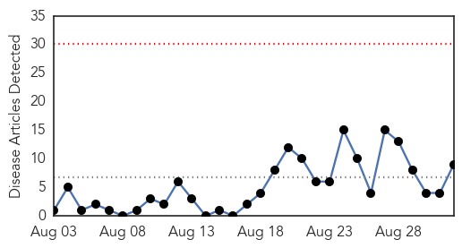
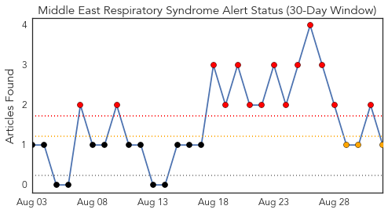
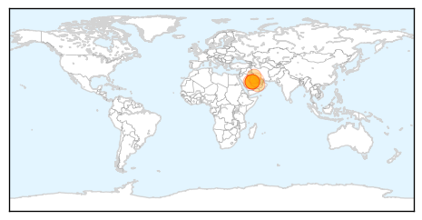
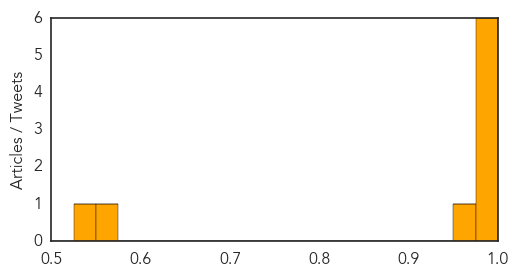

Mumps
30-Day Web Trend
3 alerts, 0 warnings

30-Day Twitter Trend
3 alerts, 0 warnings

Article Locations

Article Confidences

Top Articles:
Top Tweets:
-
No tweets found for Sep 01, 2015
MERS
30-Day Web Trend
0 alerts, 0 warnings

30-Day Twitter Trend
14 alerts, 3 warnings

Article Locations
Article Confidences
Top Articles:
- 1.000
- Saudi Arabia Deals With Surge In Fatal MERS Cases
- 0.999
- Middle East respiratory syndrome coronavirus (MERS-CoV) – Jordan
- 0.997
- WHO confirms hospital MERS outbreak in Jordan
- 0.997
- Eleven more MERS cases in Saudi Arabia, 2 in Jordan
- 0.996
- Saudi Arabia's MERS burden spills over to Jordan
- 0.990
- Eastern Province goes all-out against MERS
- 0.955
- 34 new cases of coronavirus recorded in Saudi Arabia
- 0.556
- Gulf-Pharma Medical Conference to open on Wednesday
- 0.540
- Riyadh schools a no-entry zone for corona
Top Tweets:
- 0.671
- AFD Blog `Saudi MOH Reports 4 More MERS Cases In Riyadh' MERS-CoV http://t.co/SVWddxxqU4